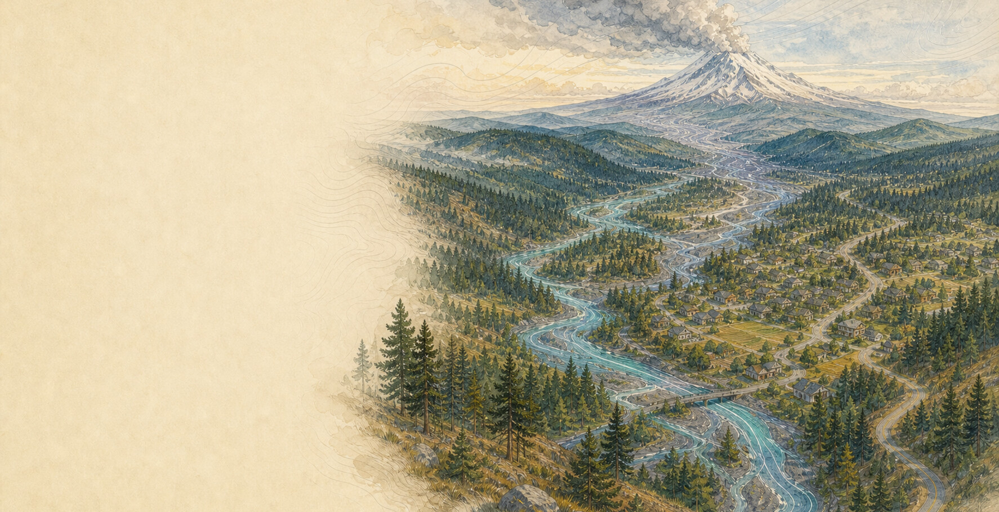
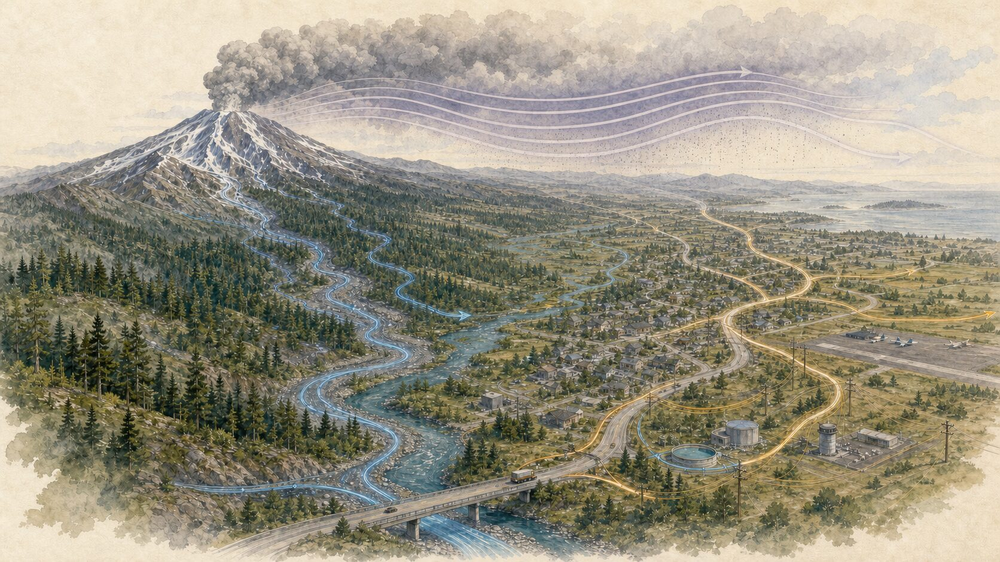
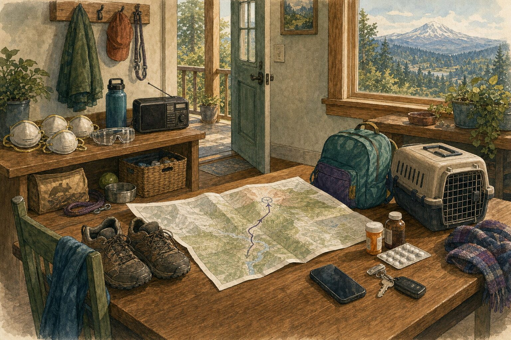

Chapter five · Volcano
Volcano
Most days, the volcanoes of Cascadia are simply part of the horizon. Preparedness begins by learning whether water, wind, or neither connects your home to one of them.
Northern California, Oregon, Washington, and southern British Columbia · Local hazard zones and instructions come first · Reviewed July 15, 2026
If volcanic activity or ash is affecting your area nowImmediate reference
If volcanic activity is affecting your area now.
-
Leave without delay
Evacuation order or lahar warning
A lahar is a fast-moving flow of water, mud, rock, and volcanic debris. Use the official route and instructions for your location. Move away from the hazard zone; do not enter a valley or closed area to watch, collect belongings, or take photographs.
-
Reduce exposure
Ash is falling; no evacuation order
Shelter as directed. Keep ash out of indoor air, avoid unnecessary travel, and protect breathing and eyes when you must be outside. Follow local health, water, and cleanup guidance.
Location changes the correct action. A valley may be evacuating while a community downwind is sheltering from ash. Follow the instruction for the place you are.
Open official volcano, emergency, and ash sources Read the complete volcano quick reference
The horizon and the watershed
The nearest summit is not the whole map.
Cascadia’s volcanoes are monitored, mapped, and usually quiet. The useful first question is not “How close am I?” It is “What path could a hazard take to reach this place?”
Lahars follow low ground, often a river valley, and can travel far beyond a mountain’s flanks. Ash takes a different path, moving with the wind across watersheds and borders. Still farther away, an eruption can interrupt roads, aviation, power, water, and deliveries.
A circle around a summit misses all of that. The shape of the land explains who may need to move; the wind explains who may need protection from ash. An official volcano-specific map makes those connections visible without asking everyone in the region to prepare for the same thing.

One update, two plans
The same mountain does not ask every household to do the same thing.
Composite households: Elena and Jules are fictional. Their routes, ash plan, work schedules, animals, and official sources combine ordinary regional circumstances with established guidance.
Elena lives near a broad river valley draining a Cascade volcano. The mountain is distant enough to disappear behind low cloud, but her address is inside a mapped lahar planning area. Her local plan does not point toward the summit. It points across the valley and uphill, along a route she has walked with her child.
Jules lives much farther away, east of the crest. His neighborhood is outside the volcano’s mapped ground-hazard zones. Wind, not a river valley, is the connection he prepares for. His small ash supply sits with the household’s ordinary medication and animal supplies, and he knows how to keep ash out of the home and rainwater system.
When a scientific update appears, Elena looks toward the valley and the route she already knows. Jules looks at the affected area and the wind. The same update matters to both of them, but it does not mean the same thing.

Their preparations are different because the paths are different. Both are calm because the decision was made while the mountain was quiet.
Distance matters. The watershed and the wind explain what distance alone cannot.
The timing is different
Build gradually. Use a warning to act, not to shop.
Volcano preparation usually belongs to ordinary time. That makes it different from the first seconds of an earthquake or the narrowing escape window of a wildfire.
Cascade volcanoes often show signs of unrest days to months before an eruption. While the mountain is quiet, there is time to understand the local map and let relevant supplies join the household kit gradually, as time and budget allow.
If scientists report increasing unrest, attention should increase too. It is a good moment to revisit transportation, prescriptions, communication, and the people or animals who may need help. It is not, by itself, an instruction to evacuate.
A local warning changes the clock. At that point the work is no longer shopping or improving the plan; it is following the instruction for the place you are.
The gradual schedule has one important exception. Some lahars can begin with little warning after a landslide or slope collapse. Anyone whose daily life falls inside a mapped lahar area should already know how to reach safer ground. Supplies can wait for a budget; route knowledge should not.
Read the issuer before the color
One mountain can produce several kinds of messages.
They make more sense when each is read for the question it was meant to answer.
A volcano observatory explains what instruments are detecting and how scientists understand the activity. In the United States, that includes a ground-based Volcano Alert Level and a separate Aviation Color Code. The aviation color is written for aircraft and ash in the atmosphere, not as a household instruction.
Community instructions come from the authorities responsible for the affected place. They translate the science and local conditions into closures, evacuation, shelter, and return. A volcano can therefore receive greater scientific attention without every nearby community being told to leave.
Before reacting to a color or a screenshot, read who issued it, when it was issued, and what place it describes. That small pause keeps scientific information useful without turning it into an order it was never meant to be.
Let the pathway decide what belongs in your plan.
A volcano plan can be smaller than it first appears. Most households are preparing for one or two ways an eruption could reach their lives, not every volcanic hazard at once.
For someone whose daily life crosses a mapped lahar zone, the most consequential preparation is geographic. The boundary, nearby higher ground, and the way a usual route crosses the valley matter more than a specialized purchase. That knowledge should include the places where the household separates during the day and anyone who may need more time or help to move.
For a household connected by wind, preparation is more conditional. Well-fitting N95 respirators, protective goggles, needed medication, animal care, and a way to reduce ash entering indoor air may be useful; a dedicated room full of volcano equipment is not. Local guidance should shape decisions about ventilation, rainwater collection, driving, and cleanup, especially for people with respiratory or cardiovascular conditions.
Beyond those differences, an eruption leans on the same household resilience as other disruptions. Medication still needs to remain available, people still need a way to reconnect, and a closure can still interrupt water, power, school, work, or deliveries. The ordinary household plan carries most of that weight.
The information plan can stay modest too: a trusted volcano science source and the emergency alert source for the places the household actually uses. Road, air-quality, water, or health guidance becomes relevant when conditions touch those systems.
If ash belongs in your plan, continue with the conditional ashfall module →Or keep volcano pathways and next steps current in NowWePlan →
A mountain can remain part of the horizon without becoming a source of constant alarm.
Preparedness makes the landscape legible; it does not require rehearsing catastrophe every time cloud gathers over a summit. Once the connection between mountain and household is understood, the volcano can return to what it is on most days: weathered rock, snow, forest, water, and a familiar direction in the landscape.
Keep this part close
Volcano quick reference.
Follow the local or Tribal emergency authority for protective action. Use official volcano science, ash, health, road, water, and utility sources for the conditions they describe.
Evacuation or lahar warning
- Leave immediately by the official route and follow closures.
- Move away from the mapped hazard area; do not approach the volcano or valley.
- Take people, mobility needs, essential medication, animals, and the go bag if they are ready.
- Do not delay to gather nonessential belongings or observe the event.
Ashfall without evacuation
- Shelter and manage ventilation as local officials direct.
- Avoid unnecessary travel; ash reduces visibility and can damage vehicles.
- Use a NIOSH-approved N95 respirator and goggles when exposure cannot be avoided.
- Protect water, animals, medication, electronics, and indoor air using current guidance.
Cleanup and return
- Return or begin cleanup only when officials say it is safe.
- Avoid dry sweeping that puts ash back into the air.
- Follow local disposal, water, roof, HVAC, vehicle, and equipment guidance.
- Ash can be heavy and slippery; use qualified help for unsafe roofs or systems.
Sources and limits
The official map and authority for your place come first.
Volcano-specific hazard zones, routes, local alerts, access restrictions, water systems, and emergency procedures vary. A regional guide cannot determine a household’s protective action during an event.
During an event, use the current source named by your local government, Tribal authority, or First Nation.
Reviewed July 15, 2026